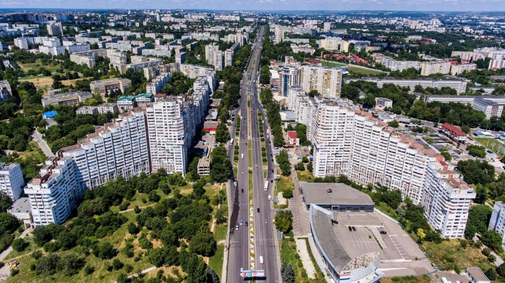

Descoperă Chișinăul - Capitala vibrantă a Republicii Moldova
Chișinăul este un oraș plin de viață și cultură, oferind o combinație fascinantă de tradiții și modernitate:
-

Statuia lui Ștefan cel Mare - Eroul național
O statuie impresionantă a voievodului Ștefan cel Mare, un simbol al istoriei moldovenești.
-

Catedrala Nașterea Domnului - Loc de rugăciune
O catedrală imponentă cu arhitectură religioasă și o istorie semnificativă.
-

Parcul Valea Morilor - Oază naturală
Un parc frumos unde poți relaxa în mijlocul naturii și admira lacul.
-

Muzeul Național de Istorie - Patrimoniu cultural
O colecție bogată de exponate istorice și culturale care dezvăluie povestea Moldovei.
-

Parcuri urbane - Relaxare în oraș
Chișinăul oferă numeroase parcuri pline de verdeață, perfecte pentru plimbări și recreere.
Concluzii
Chișinăul este un oraș în continuă evoluție, cu o moștenire culturală și o atmosferă aparte.